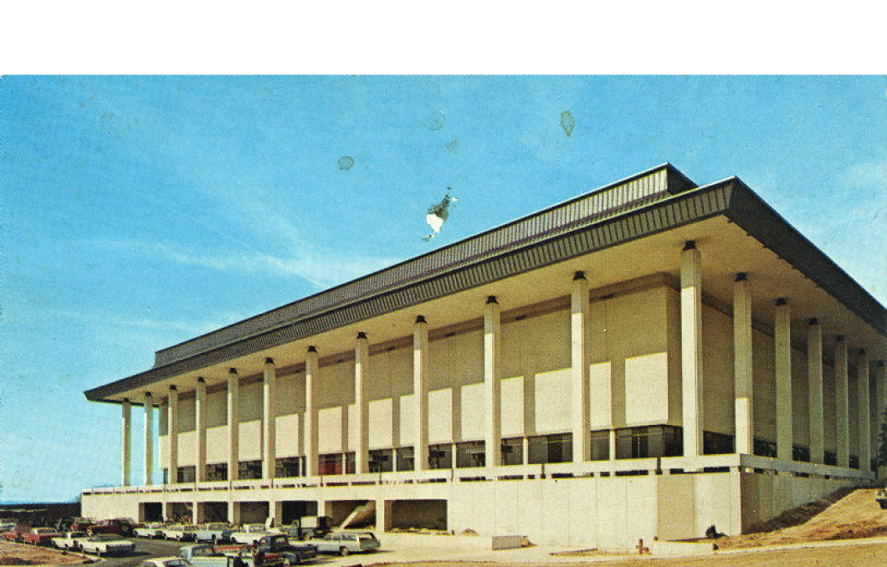
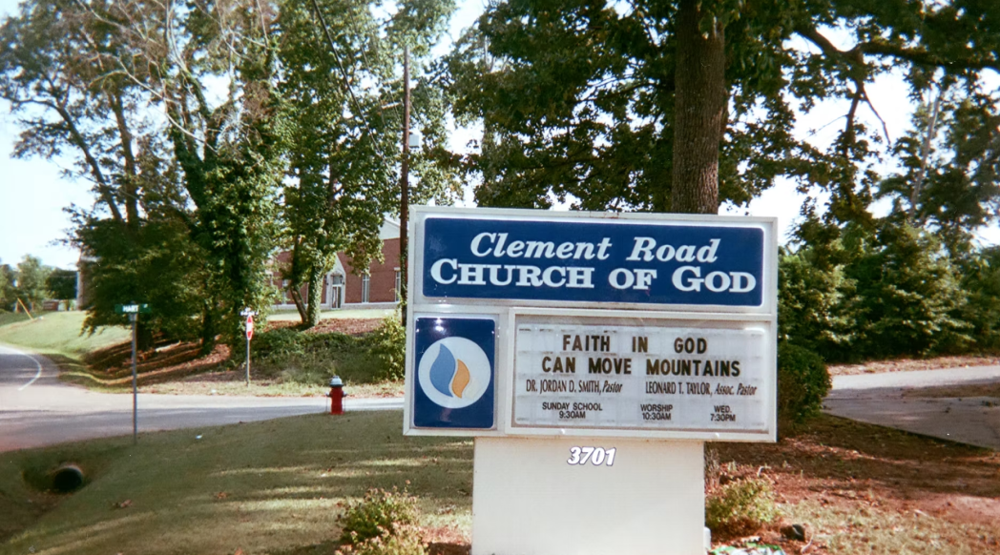
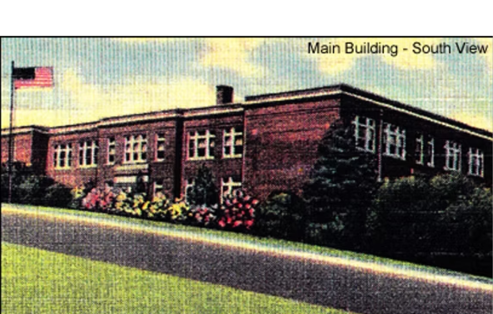
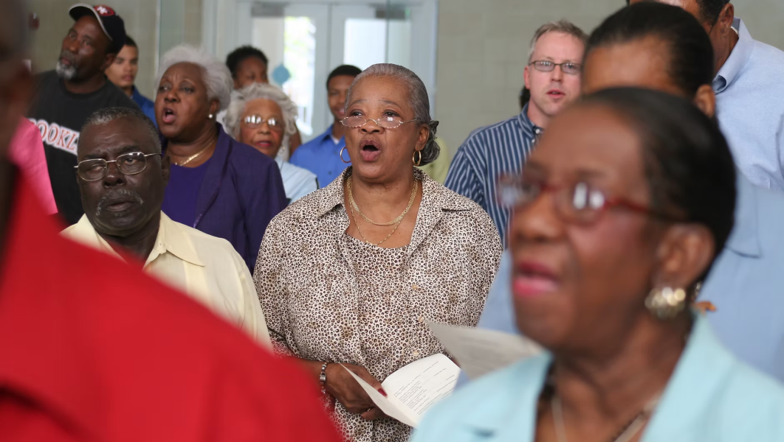

Ward One
Photographs
Nothing captures the vibrant Ward One Community like the photographs shared by the
residents.
Each subject will take you to a gallery of photos.
If you were a resident and would like to share photographs or identify a person in a
photo
please contact us.
Residents

See if you can identify any old friends in these pictures from the Ward.
Ward One Today

The Ward One community was where present day University of South Carolina buildings are today, like the Coliseum and Greek Village. See what the Ward looked like before urban renewal.
Churches

Churches were an integral part of the community. There are seven churches that were in the Ward, many still around today in different locations across Columbia.
Education

Many of the residents attended Booker T. Washington High School. Educator Celia Dial Saxon was also a Ward One resident and many in the community attended her elementary school.
Community Legacy

Check out a few photographs of what residents of the Ward are doing today. Many are from Ward One Reunion organization events. For more, go to the reunion page.